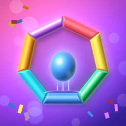

Support
How do I play?
Tap the right half of the screen to spin the shape clockwise, the left half to spin counterclockwise, or flick left or right. Get the side that matches the ball's color to the bottom before the ball lands. The first bounce of each shape is a free warm-up. You can replay the tutorial any time from How to Play on the home screen.
What's a Perfect?
A catch where the right side was in place before the ball's peak, reached the shortest way around. Perfects in a row raise your multiplier up to x5.
How do continues work?
After a miss you can continue up to twice per run. You start with one free continue; more are available as in-app purchases. Continues aren't available in the Daily Challenge, so everyone plays it on equal terms.
I bought something and don't see it
Open Skins on the home screen and tap Restore Purchases. Continues are added to your balance as soon as the purchase completes.
My score isn't on the leaderboard
Make sure you're signed in to Game Center in the iPhone Settings app. Scores are submitted when a run ends.
There's no sound
GON respects your iPhone's silent switch. Turn silent mode off, and check the speaker button on the home screen.
Contact
Still stuck or found a bug? Email bridges@duck.com with your iPhone model and iOS version.